스페인 여행기 (4) - 김태희 광장의 벽화들
게시: 2017-01-16T00:10:11+09:00
세비야에는 알카사르 궁전과 세비야 대성당 외에도 특히 한국인들에게 유명한 명소가 하나 있습니다. 바로 김태희 광장입니다. 현지인들은 그 광장을 에스파냐 광장(Plaza de España)라고 부르더군요.
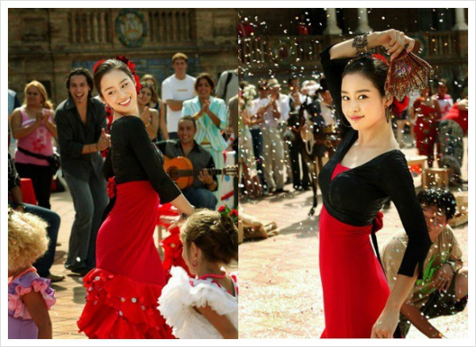
(왜 에스파냐 광장이 김태희 광장으로 더 유명한지 모르시는 분은... 그 젊음이 부럽습니다 !)
이 광장은 스페인의 전성기에 만들어진 것은 아니고, 1929년 스페인어권 이베리아-아메리카 박람회를 위해 만들어진, 비교적 현대적인 장소입니다. 그러다보니 이 명소에 얽힌 역사적 이야기 같은 것은 별로 없습니다. 이 광장에는 양쪽에 2개의 탑이 있는데, 이 탑들의 높이가 세비야 대성당의 유명한 종탑 히랄다(Giralda)와 맞먹을 정도로 높게 설계되자 세비야 전체가 들고 일어나 난리를 피웠다는 것 정도입니다. 결과적으로 히랄다의 높이는 약 100m 넘는 것에 비해, 이 두 탑의 높이는 약 70m 정도입니다.
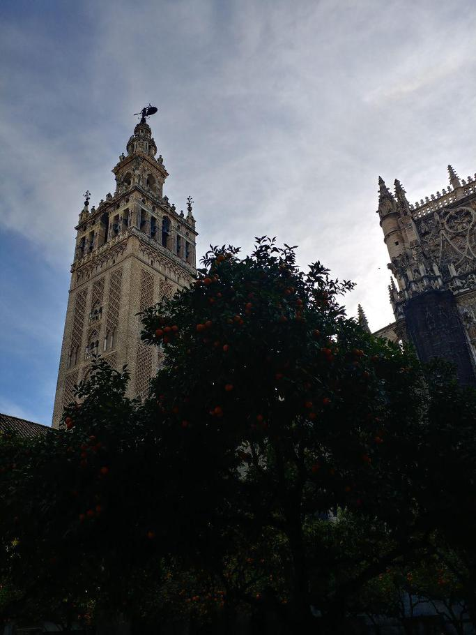
(이것이 유명한 종탑 히랄다입니다. Giralda는 풍항계를 뜻하는 단어입니다. 원래 이슬람 모스크에 딸린 첨탑 미나렛(minaret)이었던 이 종탑은 독특하게도 종탑 꼭대기로 올라가는 통로가 계단이 아니라 그냥 경사로로 되어 있습니다. 그래서 중세에 이 곳을 지배하던 무어인들은 그 꼭대기에 올라갈 때 말을 타고 올라갔다는 믿거나말거나 전설이 있습니다.)
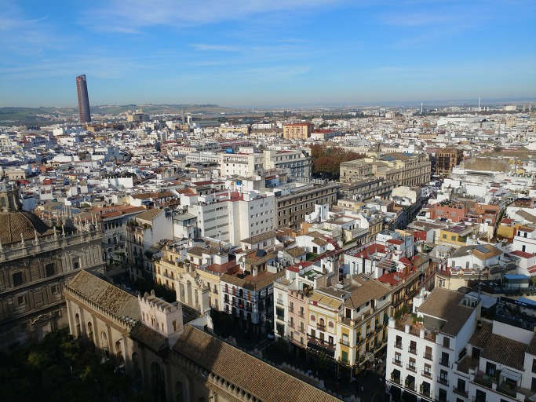
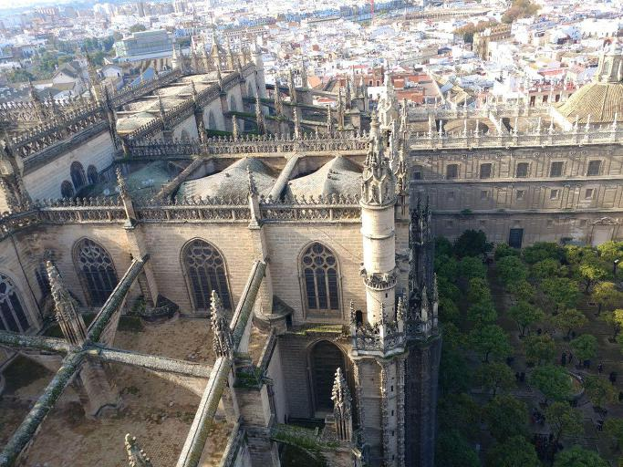
(이건 히랄다 종탑에 올라가 내려다 본 세비야 풍경입니다. 아래에 보이는 것은 세비야 대성당과 그 뒤뜰입니다. 저 배경에 길쭉한 현대적 건물 보이십니까 ? 무슨 건물인지는 못 알아봤는데, 아무튼 저렇게 삐죽 솟은 건물이 있으니 확실히 도시 경관을 확 해치더군요. 아마 저 건물 지은 사업가는 '불합리한 규제 때문에 세비야 경제가 망한다'라며 협박한 끝에 저 건축 허가를 받아내지 않았을까 합니다. 설마 모 반도국가처럼 모종의 불법적 뒷거래를...???)
이 광장에 얽힌 역사적 이야기가 없는 대신, 이 광장의 반원형 벽면에 있는 총 48개의 각 지방을 대표하는 알코브(alcove, 벽면으로 움푹 들어간 조그만 공간)에는 해당 지방을 대표하는 역사적 사건을 묘사한 그림이 타일 위에 그려져 있습니다. 어떤 것은 신대륙 탐험을, 어떤 것은 이슬람으로부터 스페인을 되찾은 레콩키스타를 그리고 있습니다. 그리고 그 중에서 나폴레옹의 프랑스에 대한 투쟁을 그린 것은 5개였습니다. 하엔(Jaen)의 바일렌(Bailen) 전투, 카디즈(Cadiz)의 1812년 헌법 제정, 마드리드(Madrid)의 도스 데 마요 (Dos de Mayo) 봉기, 폰테베드라(Pontevedra) 전투, 그리고 헤로나(Gerona)의 항복입니다.
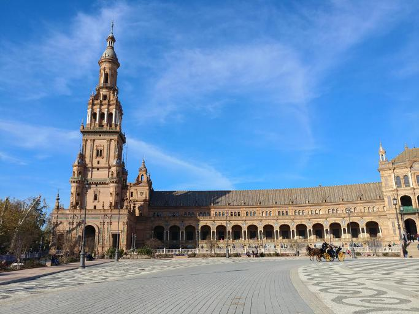
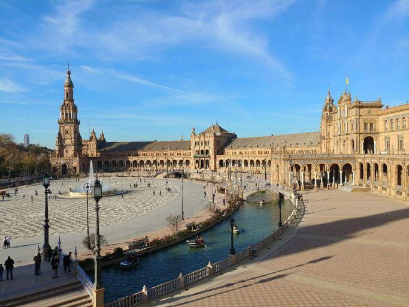
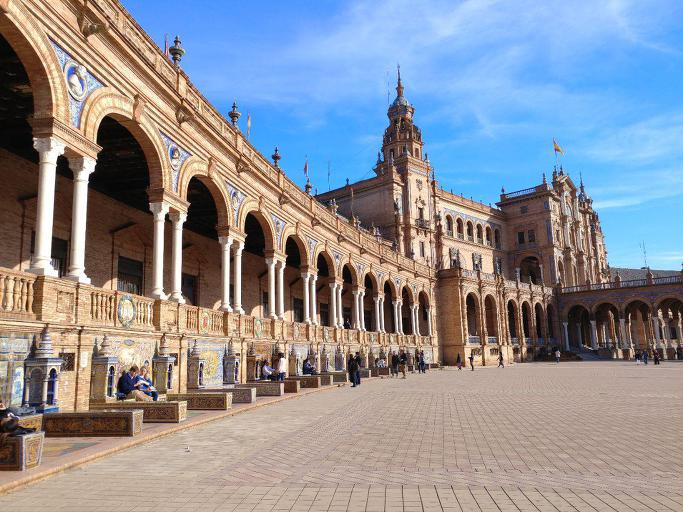
(에스파냐 광장의 모습들입니다. 맨 마지막 사진에 제가 언급한 48개의 알코브들과 그 벽면의 타일화가 보입니다.)
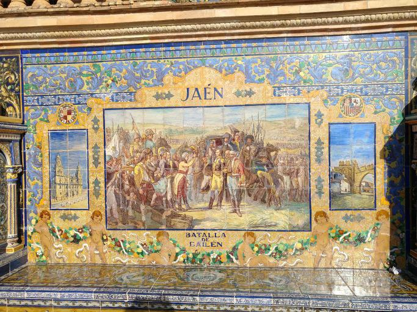
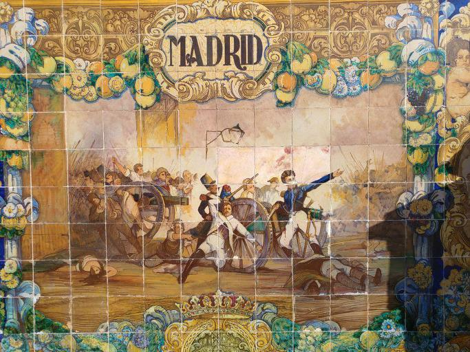
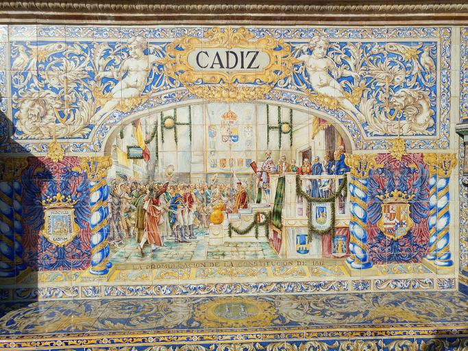
(위에서부터 하엔, 마드리드, 카디즈, 그리고 마지막으로 바다호스의 벽화입니다. 제 블로그를 계속 보셨던 분들은 하엔, 마드리드, 카디즈의 그림들은 다 알아보실 수 있을 겁니다. 마지막의 바다호스의 벽화는 보시다시피 나폴레옹에 관련된 것이 아니라, 레콩키스타에 관련된 것입니다.)
바일렌 전투, 카디즈의 헌법 제정, 그리고 도스 데 마요 사건에 대해서는 이미 다룬 바가 있으고 또 폰테베드라 전투는 너무 규모가 작으니 여기서는 생략하고, 헤로나에 대해서만 간단히 언급하겠습니다. 여기서 묘사된 사건은 1808년~1809년에 3차례에 걸친 헤로나의 포위전과 결국 헤로나의 스페인 수비대가 1809년 12월 항복한 일입니다. 보통 승전을 그리는데, 굳이 프랑스군에게 항복한 이 전투를 그린 것은 이 항전이 그만큼 의미있는 것이라는 반증이겠지요.
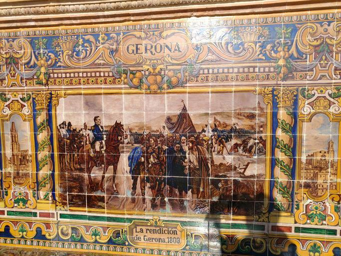
(헤로나의 항복, 1809년이라는 제목이 보입니다. 보기 추한 제 그림자가 보이는군요. 모든 사진은 애국 기업 LG의 V20으로 찍었습니다.)
1808년 나폴레옹은 스페인 왕좌 강탈에 나섭니다. 마침 권력 투쟁을 벌이고 있던 스페인 국왕 카를로스 4세와 그 아들 페르난도 7세에게서 왕위 양도를 받아내는 것은 손바닥 뒤집는 것처럼 쉬웠습니다. 무능한 국왕 카를로스 4세와 그에 못지 않게 너절했던 아들 페르난도 7세를 프랑스 바욘으로 유인한 뒤 체포해서, 두둑한 연금과 안락한 궁전을 제공하니 국민이야 어떻게 되건말건 쉽게 왕위 이양에 동의해버린 것이지요. 나폴레옹은 자신의 형 조제프를 스페인 왕위에 앉히고, 스페인 귀족들과 국민들에게는 근대적인 헌법에 따른 통치와 경제적 번영, 국가적 영광을 약속했습니다.
1808년 바르셀로나의 요새인 몬주익(Montjuïc) 요새를 지키고 있던 알바레스(Mariano Álvarez de Castro) 장군은 프랑스군이 요새를 점령하려들자 그에 맞서 싸우려 했으나, 그의 상관은 요새를 프랑스군에게 넘겨주라는 명확한 명령을 내렸습니다. 어차피 왕 자신이 나라 전체를 팔아먹은 판국에 무의미한 저항은 포기하라는 것이 그 상관의 생각이었겠지요. 알바레스는 군인이었으니, 그의 명령을 따르는 것이 그의 의무였습니다. 만약 거기에 저항했다면 알바레스는 정당한 군 통수권자에 의한 명령을 거부한 반란군이 되어 처벌받았을 것입니다. 이런 식으로 프랑스와 가장 가까운 지방인 카탈루냐의 주도인 바르셀로나가 프랑스군 손에 넘어가버렸습니다.
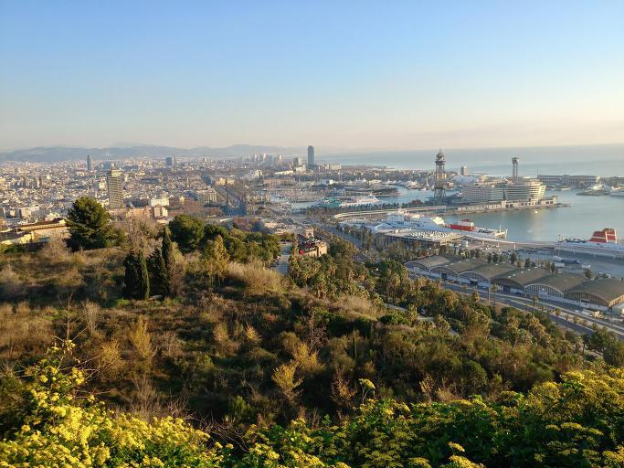
(몬주익 언덕에서 내려다본 바르셀로나 항구입니다. Montjuïc을 스페인어식으로 읽으면 아마 몬트후익 정도가 되지 않을까 합니다만, 불어의 영향을 받은 카탈란어로는 몬주익이라고 읽습니다. "유태인 산"이라는 뜻이지요. 아마 이슬람 시절 유태인들이 모여 살던 곳이었나 봅니다. 바르셀로나의 요새 이름이 몬주익입니다만, 헷갈리게도 헤로나의 요새 이름도 몬주익입니다.)
그러나 카탈루냐 사람들도 그냥 가만히 있지는 않았습니다. 특히 마드리드에서 도스 데 마요 봉기가 일어나 프랑스에 대한 투쟁이 전국적으로 퍼져나가자, 카탈루냐에서도 활발한 반프랑스 게릴라 활동이 시작되었습니다. 스페인에서 프랑스 쪽에 가장 가까운 대도시였던 바르셀로나조차도 당장 프랑스 본국과의 연락이 위태로울 지경이었습니다. 이에 나폴레옹은 새로 병력을 파견하여 바르셀로나와 프랑스 본국과의 교통로를 뚫기로 합니다. 그 타겟이 프랑스 국경과 바르셀로나의 중간 지점에 있는 도시였던 헤로나(카탈란어로는 Gerona, 스페인어로는 Girona)였습니다. 아일랜드인들로 구성된 350명의 정규군과 자원 민병대 약 1600명으로 이루어진 스페인 수비대는 1,2차에 걸친 프랑스군의 공격을 집요하게 막아냈습니다.
그러나 프랑스군으로서도 상황은 절박했습니다. 헤로나를 굴복시키지 못하면 바르셀로나도 포기해야 했고, 바르셀로나를 포기한다면 스페인 정복 전체를 포기해야 했으니까요. 프랑스군은 생시르(Laurent de Gouvion Saint-Cyr) 장군의 지휘 하에 1만8천의 대군을 동원하여 대대적인 세번째 포위 공격에 나섰습니다. 이에 대항하는 6천도 안 되는 민병대 위주의 빈약한 헤로나 수비대의 지휘관은 그 사이 반란군에 가담했던 알바레스(Mariano Álvarez de Castro) 장군이었습니다. 그는 본격적인 포위전이 시작되기 직전, '누구든 항복이나 협상 이야기를 꺼내는 자는 처형한다'라고 선언할 정도로 비장한 각오였습니다.
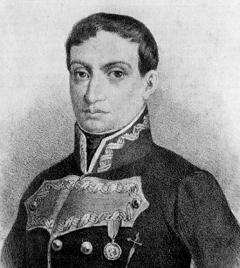
(이 분이 알바레스 장군이십니다.)
1809년 5월부터 시작된 포위전에서 프랑스군은 압도적인 병력과 화력으로 헤로나를 포위 공격했습니다. 프랑스군은 무려 2만 발의 폭발탄과 6만발의 대포알(roundshot)을 쏘아댔고, 3개월 만인 8월에는 헤로나의 요새인 몬주익(Montjuïc)을 빼앗을 수 있었습니다. 그러나 알바레스는 바르셀로나 때처럼 쉽게 포기하지 않았습니다. 그는 요새를 빼앗긴 뒤에도 길거리마다 바리케이드를 설치하고 참호를 파며 시가전을 벌였습니다. 이렇게 4개월을 더 버틴 뒤, 전염병과 기아, 전투로 헤로나 시내의 사망자가 민간인 포함 1만을 넘어선 뒤, 자신도 병에 걸려 지휘가 불가능해지자 알바레스는 지휘권을 부하에게 넘겼습니다. 더 이상 버틸 수 없었던 수비군은 즉각 항복 협상을 시작했고, 연인원 총 3만5천의 병력을 동원했다가 전염병으로 인해 자신들도 1만5천의 피해를 입은 프랑스군도 더 이상의 약탈을 금하는 조건으로 항복 협상을 체결했습니다. 1809년 12월, 포위전 시작 7개월 만의 일이었습니다.
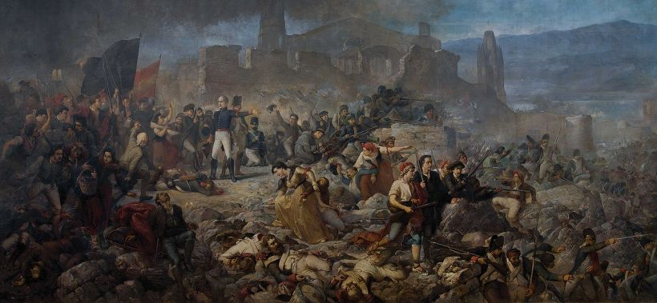
(헤로나 포위전을 묘사한 그림입니다. 알바레스 장군이 좀더... 이마가 넓게 그려졌네요. 실제로는 대머리셨나 봅니다.)
지휘관이었던 알바레스에 대한 프랑스군의 조치는 가혹했습니다. 프랑스군은 이 전투를 스페인군 대 프랑스군의 정규전으로 보지 않았고, 정당하고 적법한 스페인의 군주 조제프 국왕에 대한 무장 반란으로 보았습니다. 그 지휘관인 알바레스는 반란군의 수괴이자 법에 의한 통치에 대한 배신자였지요. 당시 전쟁에서 항복한 적장은 일종의 손님으로서 예우를 갖춰 대접해야 했는데, 알바레스는 당시 중병을 앓는 몸이었지만 일개 범죄자로 취급되어 재판을 위해 프랑스로 압송되었습니다. 그리고 거기서 1달 만에 죽었습니다. 스페인 측에서는 그의 죽음이 프랑스 측의 독살이라고 주장했고, 프랑스 측에서는 단순 병사라고 주장했지요.
실제로 당시의 정당한 국제 협약과 스페인 법에 따르면, 스페인의 적법한 국왕은 나폴레옹의 형 조제프였습니다. 그에 저항했던 알바레스는 범죄자이자 반란군, 폭도가 맞는 것이었지요. 아마 알바레스가 그냥 당시의 적법한 국왕인 조제프를 섬겼다면, 그와 그의 가족은 그런대로 편안한 삶을 살 수 있었을 것입니다. 프랑스에 저항하는 봉기를 일으켰던 마드리드의 도스 데 마요 사건에서도, 프랑스군이 마드리드 시민들을 학살하던 그 순간 마드리드 시내에 주둔하고 있던 대부분의 스페인 정규군은 동맹군인 프랑스군이 적법한 명령에 따라 폭도들을 척살하는 것을 그저 지켜보고 있었습니다. 딱 한 부대, 즉 몬텔레온 (Monteleón) 병영에 주둔하고 있던 포병 부대가 다오이스(Luis Daoíz de Torres)와 벨라르데(Pedro Velarde y Santillán)라는 두 열혈 대위의 지휘 하에 시민군과 함께 프랑스군에 대항했습니다. 물론 이들은 압도적인 수의 프랑스군에게 곧 제압되었고, 두 열혈 대위는 전투 중 폭도 중의 일부로 사살되고 말았지요. 기록에서 찾아보지는 못했으나, 그 대위들의 가족들도 범죄자의 가족으로서 무척 험한 대접을 받았을 것입니다.
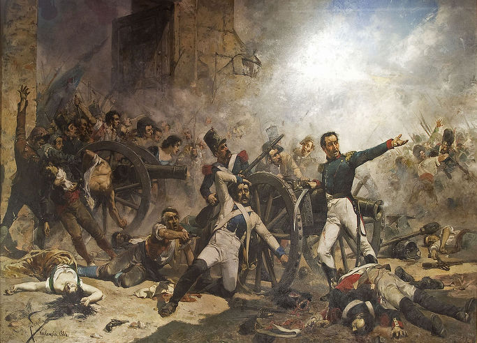
(마드리드에서 질서를 유지하려는 프랑스군의 정당한 치안 활동에 반기를 들고 몬텔레온 병영에서 폭도들과 합류하여 반항한 폭도들의 괴수, 벨라르드 대위입니다. 물론 오늘날 스페인에 가서 그런 개소리를 늘어놓으면 안전을 보장할 수 없습니다.)
자기가 옳다고 생각하는 일, 특히 국가와 사회가 잘못된 방향으로 나가고 있을 때 그를 바로 잡기 위해 현행법을 어겨가며 실행에 옮기는 것은 매우 어려운 판단입니다. 확실한 것은 어느 나라든지 독립 운동을 하면 3대가 어렵게 산다는 것은 공통적인 일인가 봅니다. 그러나 그런 값진 희생이 없었다면 오늘날의 스페인의 정체성과 긍지는 없었겠지요. 1929년 박람회를 위해 에스파냐 광장을 만들 때 각 지방을 상징하는 역사적 사건을 고를 때, 스페인에는 화려하고 영광스러웠던 역사가 그렇게 많음에도 불구하고 48개의 지역 중 무려 5개 지역이 반-나폴레옹 항쟁을 선정한 것을 보면 그들의 희생에 대해 스페인 사람들이 생각하는 비중이 매우 큰 것이 분명합니다.
저같은 겁장이는 사회적으로 옮은 일을 한답시고 법을 어길 용기를 내기 어렵습니다. 저는 누구에게도, 특히 제 어린 아들에게는 그런 어려운 일을 권장하고 싶지 않습니다. 그렇기에 더더욱, 제 아들을 포함한 다음 세대가 그런 어려운 일을 하지 않아도 되도록 우리 사회를 제대로 만들어 놓고 싶습니다. 부디, 곧 있을 대선에서 여러분들이 올바른 대한민국을 위해 꼭 심사숙고 뒤 후회없는 한표를 행사해주시기를 부탁드립니다.